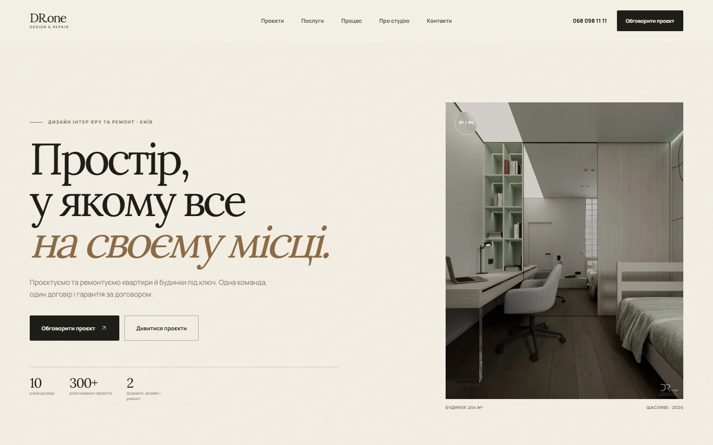
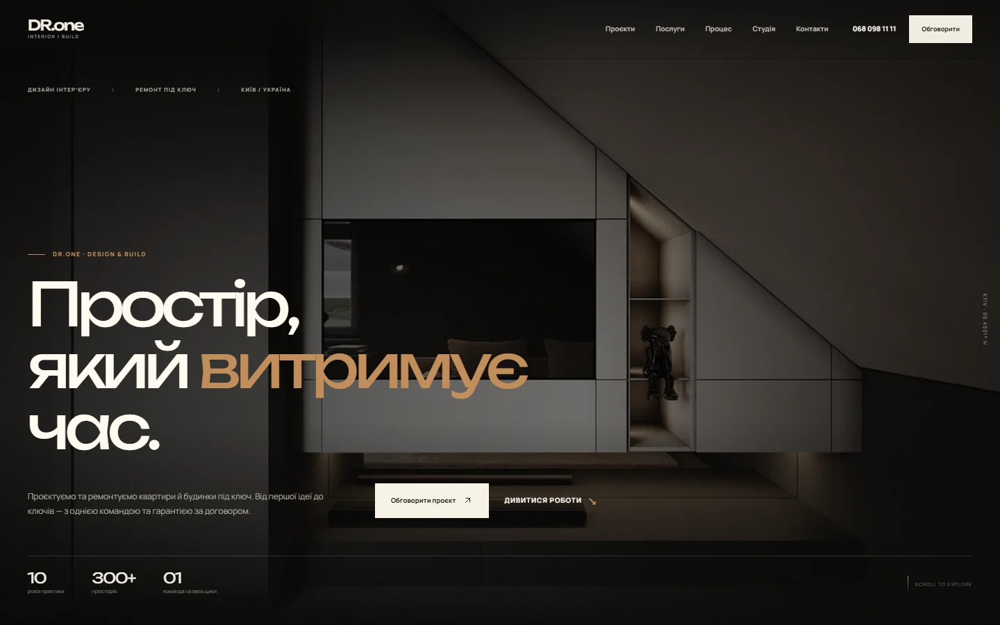
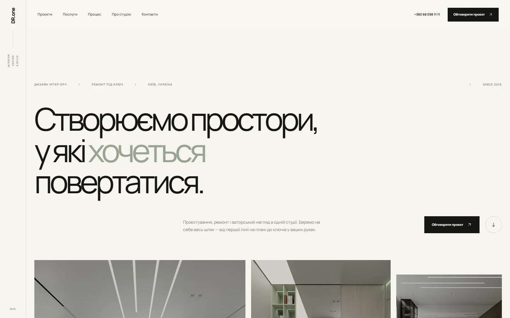
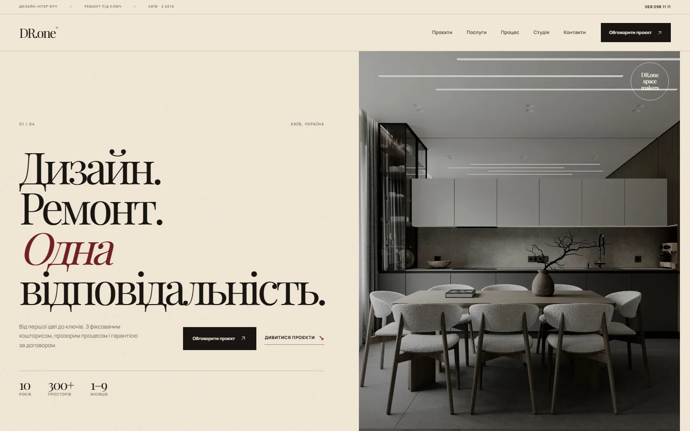

Чотири бачення одного простору
Оберіть
напрям.
Одна структура, один зміст, чотири різні способи подачі. Усі концепти зібрані за ТЗ: реальні роботи, зрозумілі послуги, процес і заявка.
Подивіться кожен варіант на телефоні та десктопі. Далі допрацюємо той, який найближчий вашому бренду.
Дивитися концепти ↓
01 Відкрити ↗Тиха архітектура
Тепла редакційністьСвітла палітра, велика антиква, асиметричні фото й багато повітря. Найближче до преміального інтер’єрного видання.

02 Відкрити ↗After Dark
КінематографічнийТемний простір, великі кадри, мідь і Unbounded. Сильний варіант для сміливого преміального позиціонування.

03 Відкрити ↗Світла галерея
Тихий мінімалізмБагато білого простору, sans-serif, вертикальна навігація й проєкти у вигляді списку. Максимально стримано й сучасно.

04 Відкрити ↗Контраст
Смілива редакційністьБордо, велика Playfair, чіткі лінії та журнальна сітка. Найбільш характерний і «запам’ятовуваний» варіант.
Подивіться з телефона
Усі концепти адаптовані під мобільний — саме там буде більшість ваших клієнтів.
Відчуйте тон
Виберіть не «найкрасивіший», а той, який звучить як DR.one: спокійно, дорого, по-людськи.
Зберемо фінал
Візьмемо сильні деталі з обраного напряму та доведемо до робочого сайту з контентом.
Усі фото — реальні роботи DR.one з публічного Instagram. Для фінальної версії використаємо оригінали без водяних знаків і додамо кейси з деталями.
@design.remont.one ↗